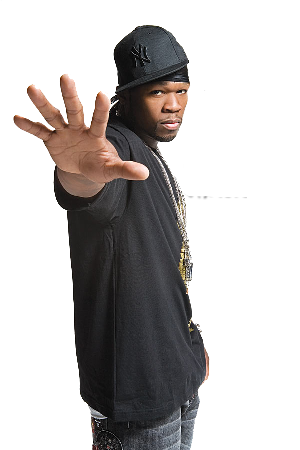

A rapper writes and performs rap music, often to highly stylized and rhythmic beats.You can only become famous if your music is popular, which means people need to be able to listen to it. Before you get sign to a label or release a record, exposure online can be an early springboard towards success
The Billboard Hot 100 is the music industry standard record chart in the United States for songs, published weekly by Billboard magazine.
For independent hip-hop artists, one of the most important things you need to do is learn how to plan a tour. Launching a successful tour depends on thorough preparation and maximising every opportunity you have to leave a mark on whatever city you’re in.
Over 90% of upcoming rappers boost their visibility and audience outreach sharply through collaboration with already famous artists, typically after building a track record of consistent music releases spanning from one to seven years.
Nearly as long as recorded sound, record labels have existed. Being signed to a label was once regarded as being equivalent to "making it" in the music business. Although record labels still play a significant role in the industry, the internet and digital technology have made it easier for artists to prosper without them. However, many people are unaware of the roles, organization, or background of record companies. To clearly describe what a record label is and does, we developed this guide.